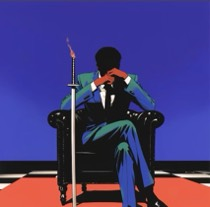

MOFARIGANO.


你好，初次见面，
希望你喜欢我！
在 GitHub 找到我

我的标签
看技术栈奇点
生活
欢迎来到，玩心收藏室。
为可爱留一个位置。
让每一个小小的它，都有自己的舞台。
我的宝藏抽屉。
好奇心是引擎。
这些是工具。
01 / RESEARCH
用数据，寻找答案。
Python / SQL / pandas / DuckDB
scikit-learn / LightGBM / SHAP
02 / BUILD
用代码，构建体验。
TypeScript / React / Next.js / Three.js
FastAPI / PostgreSQL / Tailwind CSS
03 / COLLABORATE
和团队，一起做好。
研究设计 / 任务规划 / PR Review
可复现实验 / 测试与交付 / 技术文档